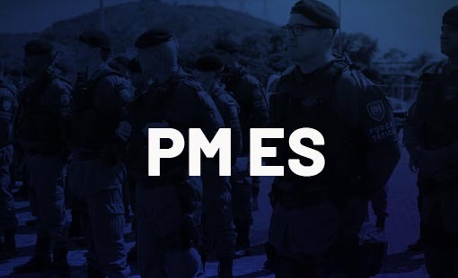

Concurso Público da Polícia Militar do Estado do Espírito Santo
Estão abertas as inscrições para o concurso público da PMES (Polícia Militar do Estado do Espírito Santo) com a oferta de 1.052 vagas para a corporação, entre Soldado Combatente, Soldado Músico, Soldado Auxiliar de Saúde e remunerações que passam dos R$ 3.730 – além de benefício. As oportunidades são para candidatos de níveis Médio e Técnico, ambos os sexos. Os profissionais para o cargo de Soldado Auxiliar em Saúde, são: Técnico em Farmácia, Técnico em Laboratório, Técnico em Saúde Bucal, Técnico em Enfermagem e Técnico em Veterinária.
A carreira militar, além de possuir uma série de vantagens, tem todo o seu processo de formação remunerado, conta com plano de carreira e promoções, estabilidade e é considerada uma profissão de muito respeito e prestígio em todo o país.
